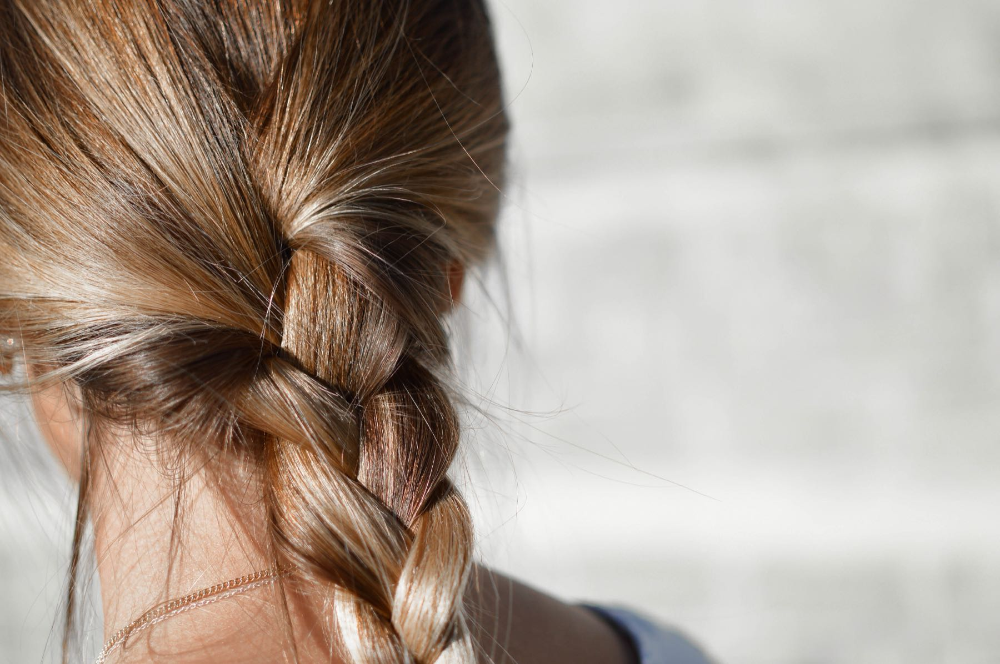

Saçınız, sizin imzanız.
Yüz hattınıza, yaşam tarzınıza ve aynada görmek istediğiniz kadına göre. Acele yok; önce konuşur, sonra makası elimize alırız.
Hizmetler
Bir hizmete dokunun; WhatsApp'ta randevu mesajınız hazır açılsın.
- Kesim & fönYüz hattınıza göre kesim, hacimli ya da düz fönRandevu
- RenkDip boya, tam boya, renk değişimiRandevu
- Röfle & balyajIşığı yakalayan geçişler, doğal tonlarRandevu
- BakımYıpranmış saçlar için yenileyici bakımRandevu
- Gelin & nişanProva ile, özel gününüze özel topuz ve modellerBilgi al
- Özel günMezuniyet, kına, davetRandevu
Örnek hizmet listesi ve örnek fotoğraflardır; kendi hizmetleriniz, fiyatlarınız ve salonunuzun fotoğraflarıyla güncellenir.
Aynadan
Renk, doku, hareket.




Koltuğunuz hazır.
İletişim
Gelmeden önce yazın; sıra beklemeden oturun.
Telefon0543 230 25 33
WhatsAppMesaj gönderin
Adres
Adresiniz buraya eklenecek · haritada ara
Saatler
Çalışma saatleriniz buraya eklenecek